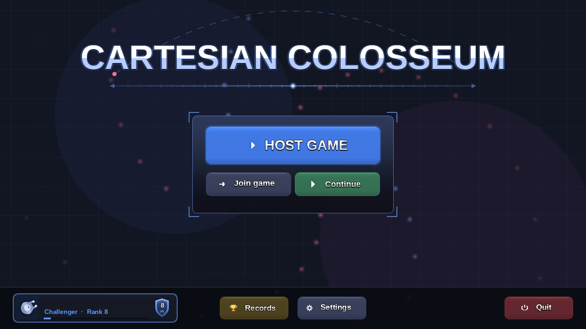
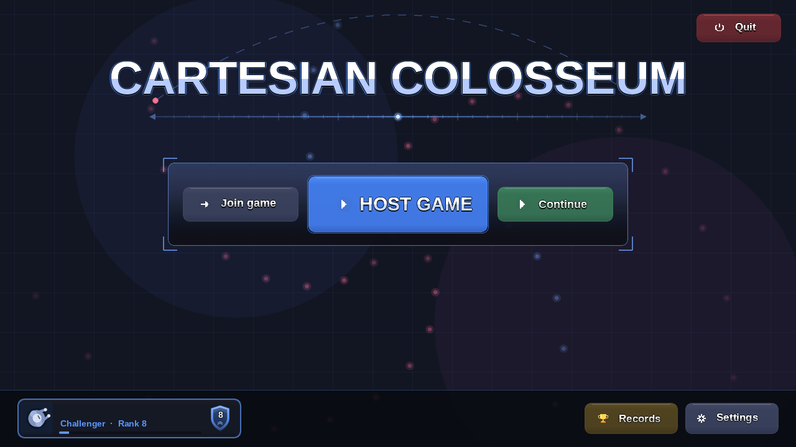
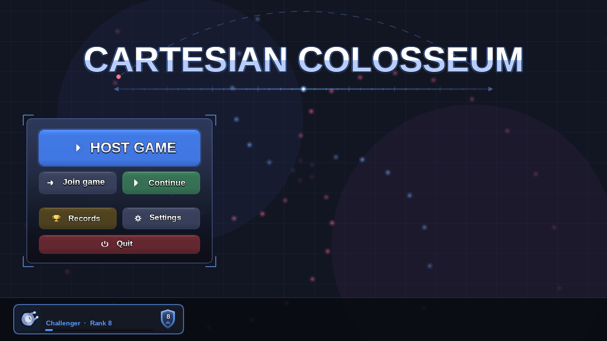
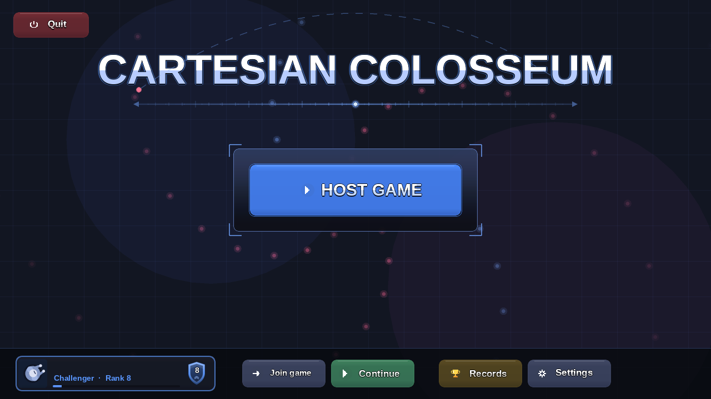

Each picture is a screenshot of the real menu, drawn by the game's own menu code with only the button positions changed, so sizes, colours and the box frame are exactly what you would see. The tip line under the title and your name are not drawn by the screenshot tool. They stay exactly as they are today.
Join game and Continue are in the framed card under Host game. Records and Settings sit in the middle of the bottom bar and Quit is alone on the right.

Join, Host and Continue sit in one wide box under the title, level with each other. Records and Settings move to the bottom right beside your name card, and Quit goes up to the top right corner.

Every button lives in one box on the left: Host game, Join and Continue, then Records and Settings, then Quit across the bottom of the box.

The box holds only Host game. Join, Continue, Records and Settings run along the bottom bar next to your name card, and Quit moves to the top left corner.
